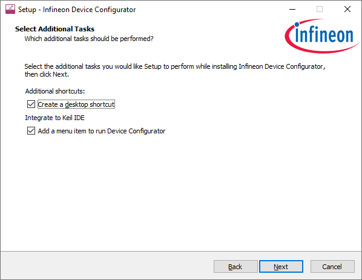
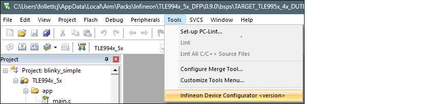
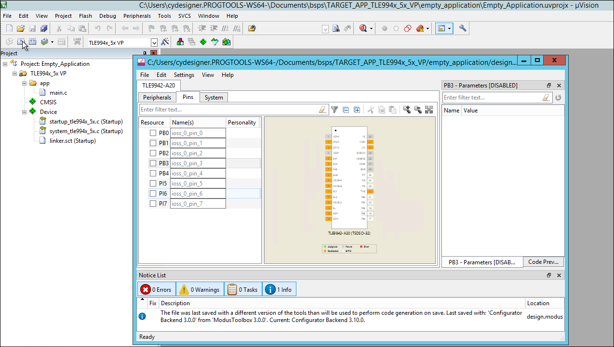
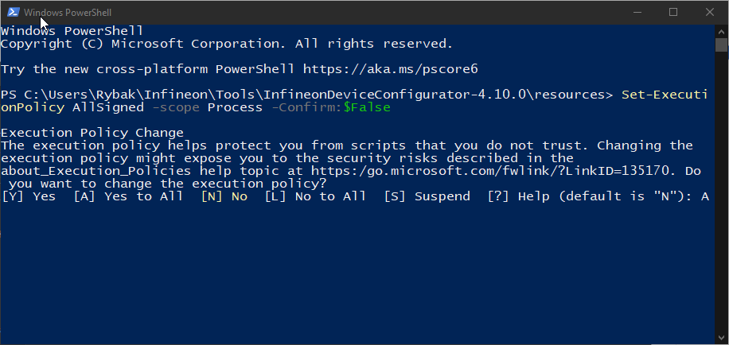
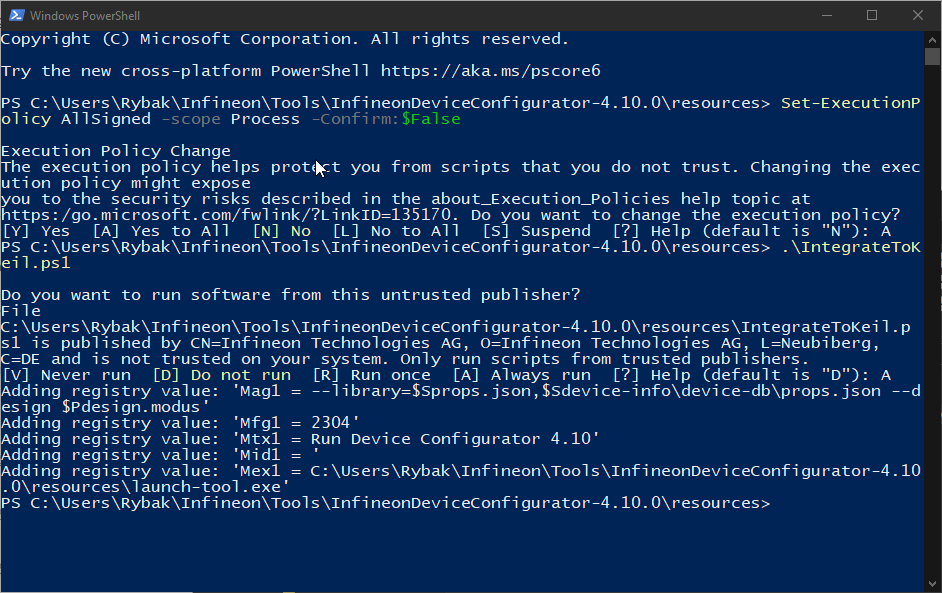
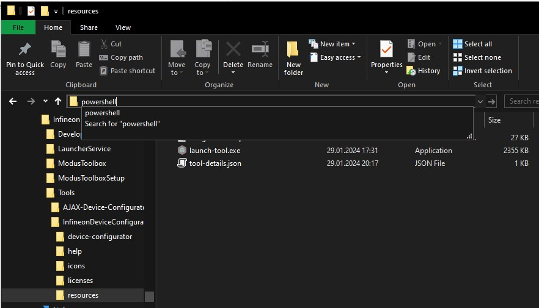
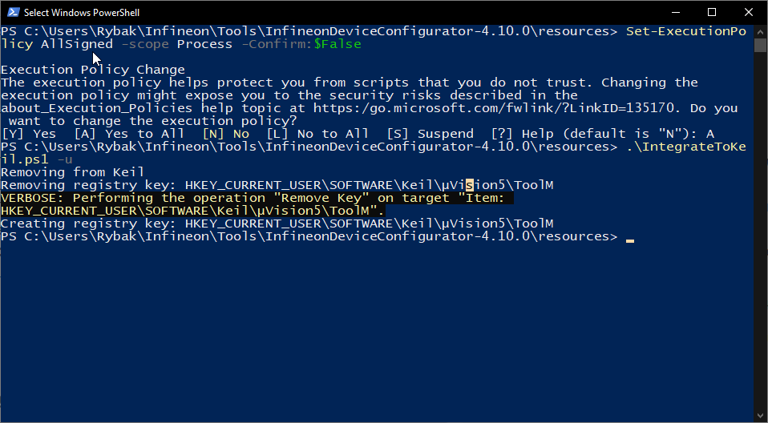

Stand-alone operation
When the Device Configurator is used outside of the ModusToolbox™ environment, such as TLEXXX, it will not have the ModusToolbox™ application context. In the current stand-alone use case, the personalities and device-db are intended to be shipped in a CMSIS pack, typically distributed via Infineon Developer Center, that is used in µVision. The Device Configurator can be run as a GUI and via the command line.
Install Infineon Device Configurator
The installer for the Infineon Device Configurator is provided on Linux, macOS, and Windows. At this time, using the tool with Keil µVision IDE outside of the ModusToolbox™ environment is only supported on Windows as the Keil µVision IDE is only available for that operating system. The installer can be downloaded here: http://www.infineon.com/idc
Launch the deviceconfigurator_<version>.<build #>_windows_x64.exe installer and follow the installer wizard steps. We recommend installing as current user.

CMSIS Pack
In order to use devices such as TLE994x_5x in the Keil µVision IDE, you need to install the appropriate CMSIS pack. For example, the MOTIX_TLE994x_5x_PDL.pack. You can find the pack on the Infineon Developer Center webpage: http://www.infineon.com/idc
Run Device Configurator
Using the GUI


When you save updates, the Device Configurator generates/updates source code in the GeneratedSource directory next to the design.modus file. See the Code generation section for more details.
Using the command line
The Device Configurator executable can be run from the command line, and it also has a "cli"
version of the executable as well. Running the executable from the command line can be
useful as part of batch files or shell scripts to re-generate the source code based on
the latest configuration settings. The exit code for the executable is zero if the
operation is successful, or non-zero if the operation encounters an error. For more
information about the command-line options, run the executable using the
-h option.
Add menu item to µVision manually
In most cases, the installer adds the menu item to the Keil µVision IDE automatically. It also extracts a IntegrateToKeil.ps1 script to the <installation folder>\resources folder. If the Tools menu in the Keil µVision IDE does not contain the items to launch the Infineon Device Configurator, you can execute the script manually.

In the Windows PowerShell window, run the following command to change the Restricted (by default) execution policy to AllSigned to allow running signed script:
Set-ExecutionPolicy AllSigned -scope Process -Confirm:$False
Then run the script:
.\IntegrateToKeil.ps1
The CLI can require confirmation of script run owned by Infineon Technologies publisher.
Please verify if the added Mag<Id>, Mfg<Id>, Mtx<Id>, Mid<Id> and Mex<Id> registry values are in the script output.
Remove menu item from µVision manually
If you use the Device Configurator uninstaller, it will remove the Run Device Configurator menu item from the Keil µVision IDE automatically. To remove the item manually, follow these steps:

In the Windows PowerShell window, run the following command to change the Restricted (by default) execution policy to AllSigned to allow running signed script:
Set-ExecutionPolicy AllSigned -scope Process -Confirm:$False
Then run the script:
.\IntegrateToKeil.ps1 -u